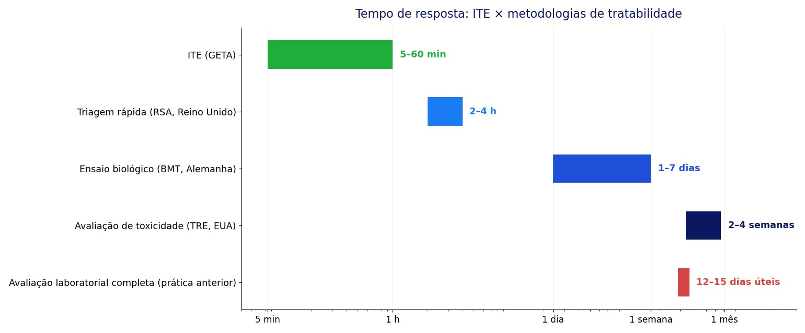
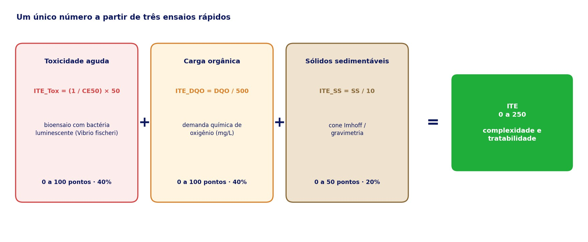
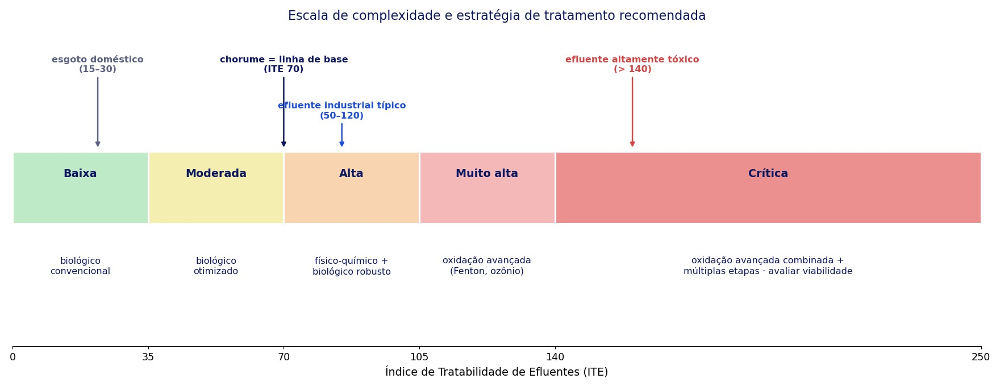
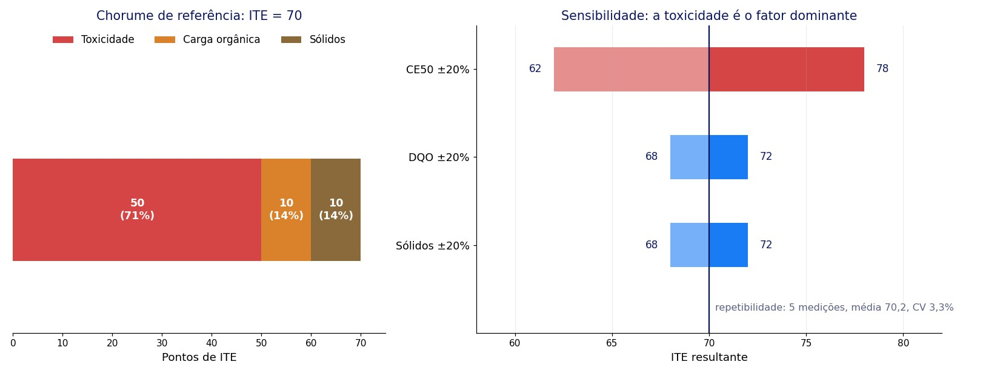
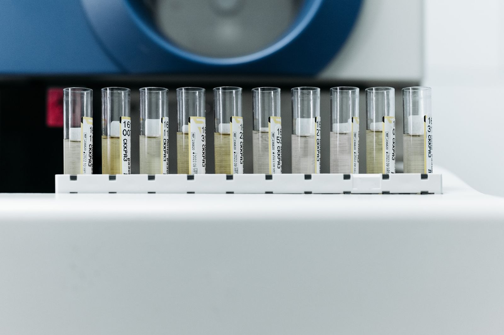
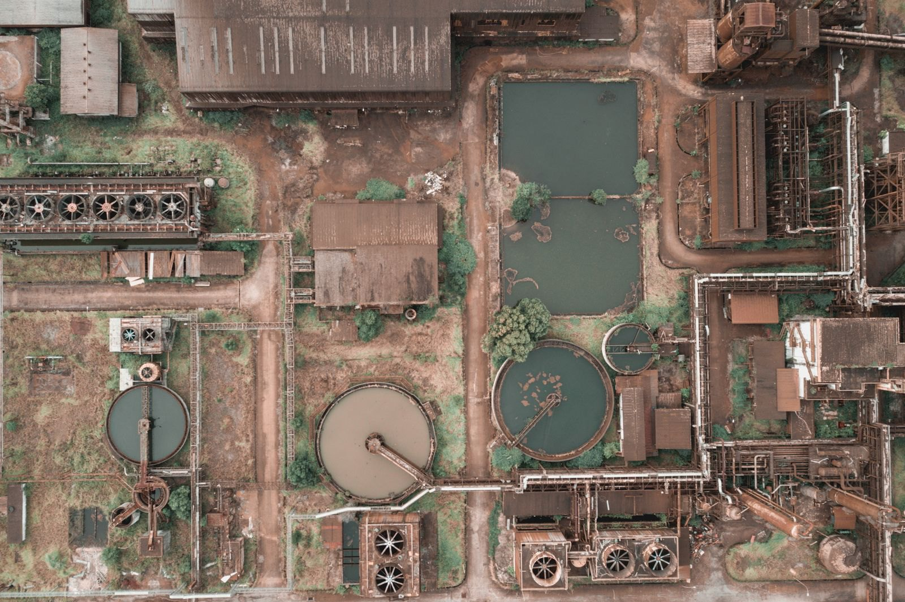

Problema / desafio do cliente
Centrais que recebem efluentes industriais de muitos clientes precisam decidir rapidamente se aceitam um efluente, como tratá-lo e quanto cobrar. Na prática, a avaliação de tratabilidade dependia de várias análises de laboratório que levavam 12 a 15 dias úteis, com custo alto, sem uma avaliação prévia da complexidade e sem uma estimativa imediata de custos.
O desafio foi criar uma ferramenta que transformasse poucos ensaios rápidos em um único indicador capaz de classificar o efluente, orientar o tratamento e apoiar a decisão comercial.
Contexto e características do processo
- Central de tratamento de efluentes industriais complexos no estado de São Paulo, que recebe efluentes de diversas origens.
- O chorume de aterro sanitário representa cerca de 80% do volume recebido e passa apenas por gradeamento: um efluente estável e bem conhecido, ideal como referência.
- As metodologias internacionais existentes (avaliação de redução de toxicidade dos EUA, ensaios respirométricos alemães e triagem rápida britânica) são demoradas, caras, focadas em um único aspecto ou pouco quantitativas.
Diagnóstico e dados analisados
- Tempo de resposta incompatível com a necessidade comercial de responder rápido ao cliente.
- Abordagem univariada: cada metodologia olha para um só aspecto (toxicidade, biodegradabilidade ou parâmetros básicos).
- Pouca correlação direta entre o resultado das análises e o custo real do tratamento.
- Dificuldade de integração com a rotina operacional da planta.

Metodologia utilizada
O ITE soma três componentes, cada um normalizado para refletir seu peso na tratabilidade:
- Toxicidade aguda (ITETox = 50 / CE50): bioensaio com a bactéria luminescente Vibrio fischeri (ISO 11348-3). Quanto menor a CE50, mais tóxico o efluente. Escala de 0 a 100 pontos.
- Carga orgânica (ITEDQO = DQO / 500): demanda química de oxigênio, normalizada pela DQO típica de esgoto doméstico. Escala de 0 a 100 pontos.
- Sólidos sedimentáveis (ITESS = SS / 10): peso menor, porque sólidos são mais fáceis de remover. Escala de 0 a 50 pontos.

O chorume foi caracterizado com métodos padronizados (bioensaio de toxicidade, DQO colorimétrica, sólidos e pH segundo o Standard Methods) e usado como linha de base da escala.
Solução de engenharia desenvolvida
Com o chorume como referência (ITE = 70), foi criada uma escala de complexidade em cinco faixas, cada uma associada a uma estratégia de tratamento:

- Baixa (0–35): tratamento biológico convencional direto.
- Moderada (36–70): biológico otimizado, com possível pré-tratamento leve.
- Alta (71–105): pré-tratamento físico-químico obrigatório + biológico robusto.
- Muito alta (106–140): oxidação avançada (Fenton, ozônio) antes do biológico.
- Crítica (≥ 140): oxidação avançada combinada (Fenton + ozônio, fotocatálise) e avaliação cuidadosa da viabilidade.
Tecnologias e processos envolvidos
- Bioensaio de toxicidade aguda com bactéria luminescente (ISO 11348-3).
- DQO pelo método colorimétrico e sólidos sedimentáveis por cone Imhoff e gravimetria.
- Oxidação avançada (Fenton, ozonização, UV/H₂O₂, UV/TiO₂) recomendada para as faixas de maior complexidade.
- Escala de decisão integrável à rotina de recebimento de efluentes.
Modelagem, simulação e ferramentas computacionais
No chorume de referência, a toxicidade responde por cerca de 71% do índice (50 pontos), enquanto carga orgânica e sólidos contribuem com 10 pontos cada. A análise de sensibilidade confirmou que o ITE reage principalmente à toxicidade, o componente mais crítico para o tratamento:

Cinco medições independentes do mesmo chorume deram ITE médio de 70,2, com coeficiente de variação de 3,3%: boa repetibilidade (CV < 5%).
Resultados obtidos
- Tempo de avaliação reduzido de 12–15 dias para 5–60 minutos.
- Classificação objetiva da complexidade: o chorume (ITE = 70) ficou corretamente na faixa moderada, adequado ao tratamento biológico após gradeamento, sem necessidade de oxidação avançada.
- Orientação econômica: o índice se correlaciona com o custo de tratamento e permite estimativas imediatas para propostas comerciais.
- Confiabilidade: repetibilidade com CV de 3,3% e sensibilidade coerente com a importância de cada parâmetro.
- Versatilidade: metodologia padronizada, aplicável a diferentes tipos de efluentes industriais.
CAPEX/OPEX e análise técnico-econômica
Quando aplicável: estimativas de CAPEX e OPEX, comparação entre alternativas, custo por m³ ou por tonelada, payback.
Escopo e responsabilidades da GETA
A GETA foi responsável por:
- revisão das metodologias internacionais de tratabilidade;
- concepção e calibração do índice e dos fatores de normalização;
- caracterização do chorume e definição da linha de base;
- escala de complexidade e recomendações de tratamento;
- validação (sensibilidade e repetibilidade) e diretrizes de implantação operacional.
Principais entregáveis
- Metodologia do ITE documentada, com fórmulas, fatores e critérios de interpretação.
- Escala de complexidade com estratégias de tratamento por faixa.
- Linha de base do chorume e resultados de validação.
- Comparativo com metodologias internacionais.
- Diretrizes para uso na rotina de recebimento de efluentes.
Galeria

